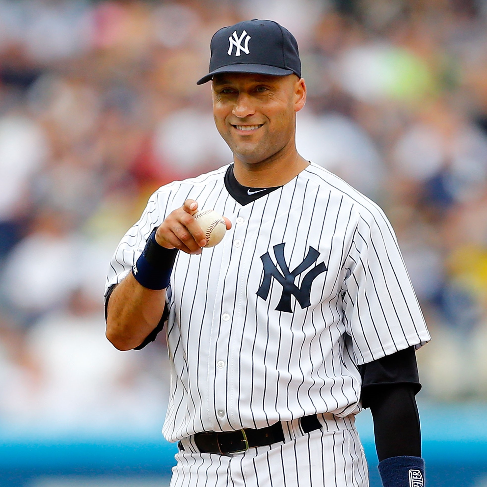
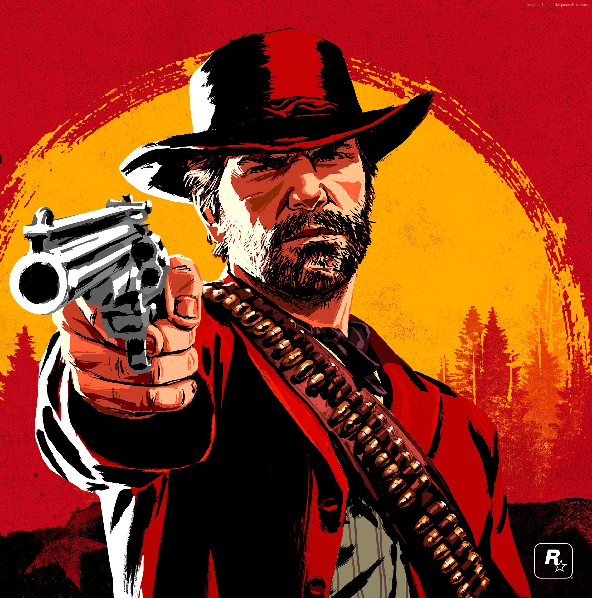
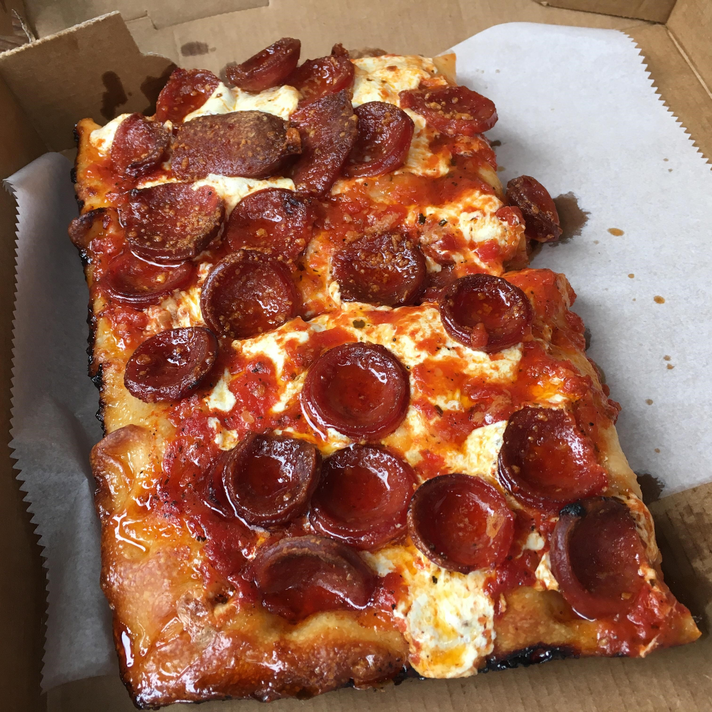

About Me
My name is Peter Zecca and I am 26 years old. I am from Westfield, NJ and graduated from the David B. Falk College at Syracuse University with a major in sports management and minor in sports analytics. I have a wealth of experience and knowledge in both the sports and finacial world through my prior work experiences. My career goals include working with analytical software in either area, but sports have always been my main passion. In addition, my skillset is very well rounded since I have utilized SQL Server, Excel, Tableau, Placer.ai, and Microsoft BI in the past.
In my free time I love to play golf, collect sports/trading cards, watch anime, and intensly follow professional sports. I also recently bought a new PC with an rtx 4090 so I have been gaming a lot with it. Finally, I enjoy traveling around the world trying new foods, visitng historical landmarks, and soaking in incredible sporting events.
Top Ten Favorite......
Athletes

- Derek Jeter
- Emmit Smith
- Mariano Rivera
- Cristiano Ronaldo
- Aaron Judge
- Dak Prescott
- Martin Brodeur
- Micah Parsons
- Gianlugi Buffon
- Jack Hughes
Anime Series
- Attack On Titan
- Death Note
- Full Metal Alchemist: Bro.
- Steins Gate
- Hunter x Hunter
- Demon Slayer
- Code Geass
- The Promised Neverland
- Jujitsu Kaisen
- Future Diary
Video Games

- Red Dead Redemption 2
- Fallout 3
- Witcher 3: Wild Hunt
- Last of Us pt. 1
- Final Fantasy 7 Remake
- Ghost of Tsushima
- Bioshock
- God of War
- Hades
- Batman Arkham City
Tri-State Area Pizzerias

- Prince St. Pizza - NY
- John's on Bleecker St. - NY
- NY Pizza Suprema - NY
- Nancy's Townhouse - NJ
- DeLorenzo's - NJ
- Papa's Tomato Pies - NJ
- Patsy's Tavern - NJ
- Sally's Apizza - CT
- Ralph's - NJ
- Lee's Tavern - NY
Places Traveled
- Turks & Caicos
- Australia
- Italy
- Alaska
- Germany
- England
- Spain
- Brazil
- Anguilla
- Florida